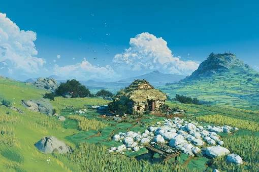
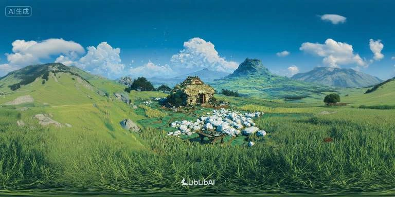
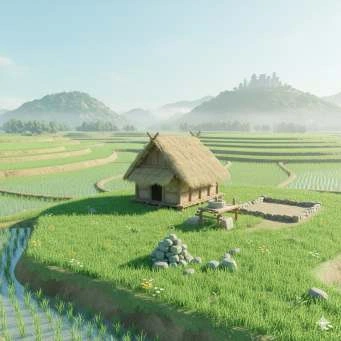
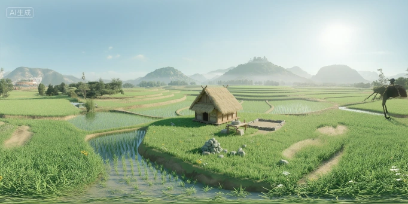
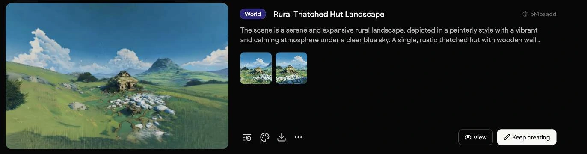
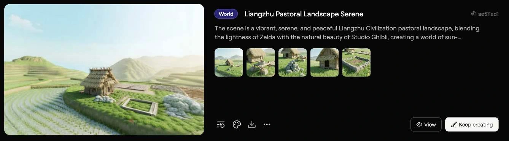
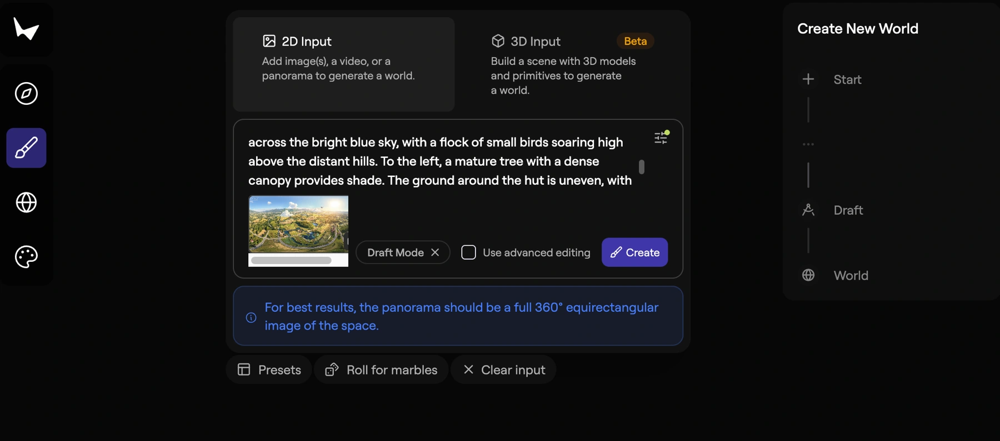

空间格局
以“宫城—内城—外城”的三重向心结构为线索，呈现密布水网与水利系统。
良渚遗址公园的生成式三维场景复原。
正在载入场景
正在展开流程图
以“宫城—内城—外城”的三重向心结构为线索，呈现密布水网与水利系统。
以莫角山夯土高台为核心，结合临水的干栏式木屋、稻田和芦苇湿地。
将湿地、舟行、水道与城墙组织成史前都邑的场景意象。
融合手绘动画美学，重构良渚水乡。盛夏积云下，柔光轻抚夯土宫殿与干栏木屋；清澈水道穿梭葱郁芦苇，形成清新、治愈的场景基调。
正在展开流程图
节点图用于展示流程；换图和参数编辑不会执行生成。
我把二维概念图继续扩成全景，再带入三维生成，用不同视角推敲空间感、光影与构图。
原展板还记录了 Seamless Tile 的环绕处理方案，用于进一步约束左右边界。
Circular VAE Decode 与 HDR VAE Decode 是展板中的后处理扩展方案，用于保留环绕特性与动态范围。
展板记录了 sRGB → Linear 的色彩转换，以及 32 位 .hdr／.exr 的导出路径；本页展示的是图像预览结果。






The scene is a serene and expansive rural landscape, depicted in a painterly style with a vibrant and calming atmosphere under a clear blue sky. A single, rustic thatched hut with wooden walls stands centrally, nestled amongst fields of tall green grass and scattered white rocks.
原始描述保留在上方“展示文本 · 原始示例”节点中。

输入工作流二的 2:1 全景图，提供建筑、地形与整体画风。
加入工作流三的场景描述，补充草屋、岩石、稻田、远山和光影信息。
Marble 生成可探索的高斯泼溅场景；下方保留两个场景的点云与视角对照。
风格重绘确定画面，全景扩展补充视野，提示词反推提取场景语义，最后由 Marble 生成可以从不同视角浏览的三维场景。